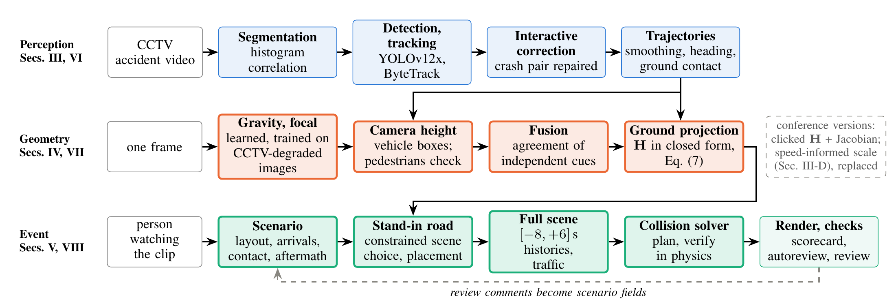

1Institute for Data and Process Science, Landshut University of Applied Sciences, Germany2TEK-UP University, Tunis, Tunisia3Higher Institute of Applied Sciences and Technology of Mateur, Tunisia
Paper (under review)Code (released with the paper)DataBibTeX
Video 201: a car turning left is struck by a car going straight
real CCTV clip
near-real camera: the CARLA scene from the real camera's posetop view: paths, speeds, gap and time to collision
ego camera on vehicle 1 (car 3435)ego camera on vehicle 2 (car 3457)
LiDAR on vehicle 1LiDAR on vehicle 2
t = −4.0 s
All seven clips run from 4 s before to 3 s after first contact (t = 0) and play in step. In the
top view each vehicle carries its box, its whole path (faint) and the part already driven (solid); the panel
gives the gap between the two bodies and the time to collision at the current closing speed. Speeds and gaps
are those of the simulation, whose absolute scale follows the estimated camera height.
Video 201 · car – car · front to side
· tier: lane (2–4 m) · predicted position error 2.4 m · CARLA Town03
vehicle 1 (car, track 3435) · vehicle 2 (car, track 3457) — the ego and LiDAR views are mounted on these
Real2CARLA-GFP turns an uncalibrated CCTV recording of a traffic accident into a CARLA simulation that can be replayed, filmed from any viewpoint and changed.
From a single frame it recovers the camera pose and maps every tracked road user to metres on the road, without clicked points or a site map: a median error of 3.26 m in simulation and 2.15 m on real roadside cameras.
A scenario that a person confirms then constrains the scene, the motion and a physics collision solver. Over six review iterations on 76 CADP videos, the reconstructions a reviewer rated good rose from 37 to 66.

Perception extracts and repairs the trajectories; the geometry-first projection (GFP) maps them to metres from one frame, without clicks or a site map; the event stage rebuilds the accident in CARLA, checked by a gate and a person.Full abstract
Rebuilding a real traffic accident as an executable simulation requires identity-consistent trajectories, a metric ground mapping, and a collision that happens as it did. Real2CARLA-GFP is a trajectory-centric pipeline that turns uncalibrated CCTV recordings of accidents into CARLA scenarios, and this article measures each of its stages. Four multi-object trackers on real accident footage reach similar accuracy, and none keeps both colliding road users under one identity in most videos, which justifies interactive correction. Exact ground truth from 1,113 simulated scenes overturns two choices of our conference pipeline: a Jacobian correction raises the localization error of a clicked homography from 1.03 to 41.77 m, and support-vector regression estimates speed about four times more accurately than a statistical ensemble. Clicked correspondences are fragile and, on a stand-in simulator road, do not exist. A geometry-first projection therefore recovers the camera pose from one frame and derives the homography in closed form. Without clicks or a site map, it places vehicles within 40 m of the camera with a median error of 3.26 m in simulation, as accurately as four clicks on a metric map of the true site, and of 2.15 m on real roadside cameras. A scenario that a person confirms then constrains scene choice, motion, and a physics collision solver. Over six review iterations on 76 CADP videos, the reconstructions that a human reviewer rated good rose from 37 to 66, and an automatic scorecard agreed with the reviewer on 95.3 % of its judged verdicts.
Gallery
Nine accidents a reviewer rated good in the last iteration. The real clip plays on the left; choose the
reconstructed view on the right. Both clips run from 4 s before to 3 s after first contact (t = 0) and stay in step
while playing and scrubbing. Ego is a forward camera at the front of a crash vehicle's roof, LiDAR a 64-channel
scanner on its roof, drawn from behind and above and coloured by object class (yellow: vehicles, red: people,
purple: road).
A bus turns across a car's path
real CCTV clipreconstruction: near-real
t = −4.0 s
Video 108 · bus – car · front to side
· tier: metric (≤ 2 m) · predicted position error 1.9 m · CARLA Town03
· left-hand traffic, simulated mirrored and flipped back
vehicle 1 (bus, track 1621) · vehicle 2 (car, track 1670) — the ego and LiDAR views are mounted on these
Paths and speeds
Line: the motion the simulation drives, including the history before each vehicle was
seen. Dots: positions and speeds GFP measured from the video. Absolute distances and speeds scale with the
estimated camera height (metric (≤ 2 m)).
Video 114 · car – car · front to side
· tier: lane (2–4 m) · predicted position error 2.7 m · CARLA Town03
vehicle 1 (car, track 4427) · vehicle 2 (car, track 4449) — the ego and LiDAR views are mounted on these
Paths and speeds
Line: the motion the simulation drives, including the history before each vehicle was
seen. Dots: positions and speeds GFP measured from the video. Absolute distances and speeds scale with the
estimated camera height (lane (2–4 m)).
Video 127 · car – motorcycle · front to side
· tier: lane (2–4 m) · predicted position error 3.1 m · CARLA Town03
vehicle 1 (car, track 4108) · vehicle 2 (motorcycle, track 4116) — the ego and LiDAR views are mounted on these
Paths and speeds
Line: the motion the simulation drives, including the history before each vehicle was
seen. Dots: positions and speeds GFP measured from the video. Absolute distances and speeds scale with the
estimated camera height (lane (2–4 m)).
Video 30 · car – car · head-on
· tier: metric (≤ 2 m) · predicted position error 1.8 m · CARLA Town05
vehicle 1 (car, track 27919) · vehicle 2 (car, track 27949) — the ego and LiDAR views are mounted on these
Paths and speeds
Line: the motion the simulation drives, including the history before each vehicle was
seen. Dots: positions and speeds GFP measured from the video. Absolute distances and speeds scale with the
estimated camera height (metric (≤ 2 m)).
Video 103 · van – motorcycle · head-on
· tier: metric (≤ 2 m) · predicted position error 1.6 m · CARLA Town04
vehicle 1 (van, track 635) · vehicle 2 (motorcycle, track 661) — the ego and LiDAR views are mounted on these
Paths and speeds
Line: the motion the simulation drives, including the history before each vehicle was
seen. Dots: positions and speeds GFP measured from the video. Absolute distances and speeds scale with the
estimated camera height (metric (≤ 2 m)).
Video 124 · car – motorcycle · sideswipe
· tier: metric (≤ 2 m) · predicted position error 1.8 m · CARLA Town03
vehicle 1 (car, track 19369) · vehicle 2 (motorcycle, track 19412) — the ego and LiDAR views are mounted on these
Paths and speeds
Line: the motion the simulation drives, including the history before each vehicle was
seen. Dots: positions and speeds GFP measured from the video. Absolute distances and speeds scale with the
estimated camera height (metric (≤ 2 m)).
Video 58 · car – truck · sideswipe
· tier: lane (2–4 m) · predicted position error 2.1 m · CARLA Town10HD
· left-hand traffic, simulated mirrored and flipped back
vehicle 1 (car, track 7985) · vehicle 2 (truck, track 8052) — the ego and LiDAR views are mounted on these
Paths and speeds
Line: the motion the simulation drives, including the history before each vehicle was
seen. Dots: positions and speeds GFP measured from the video. Absolute distances and speeds scale with the
estimated camera height (lane (2–4 m)).
Video 160 · car – car · rear-end
· tier: metric (≤ 2 m) · predicted position error 1.8 m · CARLA Town03
vehicle 1 (car, track 21965) · vehicle 2 (car, track 22030) — the ego and LiDAR views are mounted on these
Paths and speeds
Line: the motion the simulation drives, including the history before each vehicle was
seen. Dots: positions and speeds GFP measured from the video. Absolute distances and speeds scale with the
estimated camera height (metric (≤ 2 m)).
Video 152 · car – car · rear-end
· tier: lane (2–4 m) · predicted position error 2.2 m · CARLA Town02
vehicle 1 (car, track 24412) · vehicle 2 (car, track 24413) — the ego and LiDAR views are mounted on these
Paths and speeds
Line: the motion the simulation drives, including the history before each vehicle was
seen. Dots: positions and speeds GFP measured from the video. Absolute distances and speeds scale with the
estimated camera height (lane (2–4 m)).
Each review iteration turned the reviewer's comments into scenario fields or pipeline fixes and
rendered every video again. Over the 76 videos, the reconstructions rated good rose from 37 to 66. Choose an
iteration to see this accident as it was rendered then, next to the real clip.
real CCTV clipiteration 6: good
t = −4.0 s
Iteration 4 was rendered but rated for one video only, so it has no rating here.
Where it fails
Ten of the 76 reconstructions were still rated needs work after six iterations. Three of
them, with the reason.
A car, a pedestrian, and a car the tracker missed
⚠ The tracker missed the car that arrives from the left, strikes car 20837 and is pushed towards the pedestrian. Without it no car-to-car contact can be planned, so only the near miss with the pedestrian is rendered.
real CCTV clipreconstruction: near-real
t = −4.0 s
Video 144 · car – person · other
· tier: lane (2–4 m) · predicted position error 3.6 m · CARLA Town04
vehicle 1 (car, track 20837) — the ego and LiDAR views are mounted on these
Head-on collision seen from the wrong side
⚠ In the real video one car arrives from the front and the other from behind. The reconstruction places both arrivals one sector off in the same rotational direction, so they come from the right and the left, and the timing of the swerve does not match.
real CCTV clipreconstruction: near-real
t = −4.0 s
Video 41 · car – car · head-on
· tier: lane (2–4 m) · predicted position error 2.8 m · CARLA Town03
vehicle 1 (car, track 13751) · vehicle 2 (car, track 13798) — the ego and LiDAR views are mounted on these
Junction collision with the roles reversed
⚠ At the annotated contact time, car 4062's track is still 10 m short of the other car's path. The collision solver reaches only a corner touch, with the striking and struck vehicles swapped.
real CCTV clipreconstruction: near-real
t = −4.0 s
Video 155 · car – car · front to side
· tier: lane (2–4 m) · predicted position error 2.3 m · CARLA Town05
vehicle 1 (car, track 4062) · vehicle 2 (car, track 4069) — the ego and LiDAR views are mounted on these
Downloads
Each gallery accident can be downloaded as a scene: the confirmed scenario, the trajectories GFP measured, every
road user the simulation drives, the collision solver's plan, and a CARLA 0.9.16 recorder log that replays the
run with any sensors you attach. A README in each archive describes every file and column.
Real2CARLA: Bridging Real and Synthetic Domains for Traffic Accident Simulation, IEEE ADACIS, 2025.
Real2CARLA+: Geometry-Aware Traffic Accident Reconstruction in CARLA from Uncalibrated Real Accident Videos, under review, 2025.
BibTeX
@misc{rezgui2026real2carlagfp,
author = {Yassine Rezgui and Andrea Schiederer and Mohamed Nebil Dellaji and
Sahar Jemai and Daniel Laurin Eichhorn and Jonas Rullert and
Bchira Ben Mabrouk and Abdelmajid Khelil},
title = {{Real2CARLA-GFP}: Reconstructing Real Traffic Accidents in {CARLA}
from Uncalibrated {CCTV} Video},
year = {2026},
note = {Under review}
}